Trois chapitres sont dans le cahier : la masse volumique, l’atome, puis les molécules et la réaction chimique.
Autour du chapitre 2 s’ajoutent les pages du manuel sur le chapitre 9 (« Des atomes aux ions ») et sur le chapitre 13 (« Le noyau atomique »).
La lecture complète reprend les expériences et les calculs du cahier. La synthèse garde les formules et les résultats.
L’extra va plus loin que le cahier, sur les mêmes notions.
Chapitre 1 — La masse volumique
ρ = m / V. Masse en g, volume en mL, masse volumique en g/mL. Pour l’eau, 1 g/mL : c’est une convention, le gramme a été défini comme la masse d’un centimètre cube d’eau.
50 g pour 50 mL. ρ = 50 / 50 = 1 g/mL.
45,9 g pour 50 mL. ρ = 45,9 / 50 = 0,918 g/mL.
L’eau et l’huile ne se mélangent pas. L’huile reste au-dessus, parce que sa masse volumique est plus petite.
La matière est faite d’atomes. Des atomes liés ensemble forment une molécule.
Un atome : un noyau, et des électrons qui gravitent autour. Entre les deux, du vide. Structure lacunaire.
Dans le noyau : protons, charge +, et neutrons, sans charge. Les électrons ont une charge −.
Un atome est électriquement neutre : autant de protons que d’électrons.
Z est le numéro atomique, le nombre de protons. A est le nombre de masse, protons + neutrons. N = A − Z.
Exemple du cahier, le cuivre : 6329Cu. Z = 29, A = 63, donc N = 34 neutrons.
Les isotopes d’un élément ont le même Z et un A différent. Carbone 12, 13 et 14 sont des isotopes du carbone.
Manuel, chapitre 9 — Des atomes aux ions
Thomson et Perrin mettent en évidence l’électron, de charge négative. Modèle de Thomson : un « pudding », pâte positive avec des électrons dedans.
Modèle planétaire : des électrons qui gravitent autour d’un noyau central positif.
Il montre qu’il y a du vide entre le noyau et les électrons. Le modèle de Perrin est confirmé.
Un atome mesure environ 10−10 m = 0,1 nm. Il est électriquement neutre.
Z indique le nombre de charges positives du noyau. Dans un atome neutre, il y a autant d’électrons.
Un ion est un atome, ou un groupe d’atomes, qui a perdu ou gagné un ou plusieurs électrons. Perdus : ion positif, un cation. Gagnés : ion négatif, un anion.
Formule d’un ion : le symbole, avec la charge en exposant. Mg2+, Cl−, Na+.
Les ions rendent une solution conductrice. Une solution est neutre : s’il y a des cations, il y a aussi des anions.
On identifie un ion par un test caractéristique sur un échantillon : un réactif forme un précipité caractéristique.
Manuel, chapitre 13 — Le noyau atomique
Le noyau atomique est 100 000 fois plus petit que l’atome : 10−15 m contre 10−10 m. Les nucléons (protons et neutrons) constituent le noyau, qui concentre la quasi-totalité de la masse de l’atome, plus de 99 %.
Z, numéro atomique = nombre de protons = nombre d’électrons de l’atome neutre. A, nombre de masse = nombre de nucléons. Nombre de neutrons : N = A − Z.
On représente un noyau par le symbole AZX : A en haut à gauche, Z en bas à gauche. Exemple : 6329Cu, 63 nucléons, 29 protons, donc 63 − 29 = 34 neutrons.
Un élément chimique est l’ensemble des atomes, ions… ayant le même nombre de protons Z. Deux atomes sont isotopes s’ils ont le même Z mais des A différents : carbone 12, 13 et 14.
Chapitre 3 — Les molécules et la réaction chimique
Une molécule est formée d’au moins deux atomes reliés par des liaisons chimiques. On la représente par une formule et un modèle moléculaire.
Dans une réaction chimique, les atomes se réarrangent mais ne disparaissent pas. On écrit : réactifs → produits, séparés par des +. L’équation doit être équilibrée : mêmes atomes, en même nombre, des deux côtés.
Conservation de la masse (Lavoisier) : la masse des réactifs disparus est égale à la masse des produits formés. « Rien ne se perd, rien ne se crée, tout se transforme. »
Combustion complète du carbone : C + O2 → CO2.
Combustion du pentane : C5H12 + 8 O2 → 5 CO2 + 6 H2O. Les coefficients en rouge équilibrent l’équation.
Chapitre 1 · définition
La masse volumique
La masse volumique ρ d’un échantillon est le quotient de sa masse m par le volume V qu’il occupe.
ρ = m / V, avec ρ en g/mL, m en g, V en mL.
À savoir : ρeau = 1 g/cm³. Un centimètre cube d’eau a une masse de 1 g. Ce n’est pas une coïncidence, c’est une convention.
Expérience du cours : on mesure la masse de deux solides de même volume. Les masses sont différentes. Interprétation : la masse par unité de volume est caractéristique d’une substance. Sur le document, les balances affichent 172,5 g et 210,7 g.
Chapitre 1 · liquides
Eau et huile
Protocole : poser une éprouvette graduée vide sur la balance et tarer. Verser 50 mL d’huile, noter la masse. Recommencer avec l’eau.
1 g/mLeau, 50 g / 50 mL
0,918 g/mLhuile, 45,9 g / 50 mL
huile au-dessusmélange hétérogène
Ton observation : l’eau ne se mélange pas avec l’huile. On obtient un mélange hétérogène. L’huile reste au-dessus de l’eau car sa masse volumique est plus petite.
La grandeur qui explique ce comportement est la masse volumique.
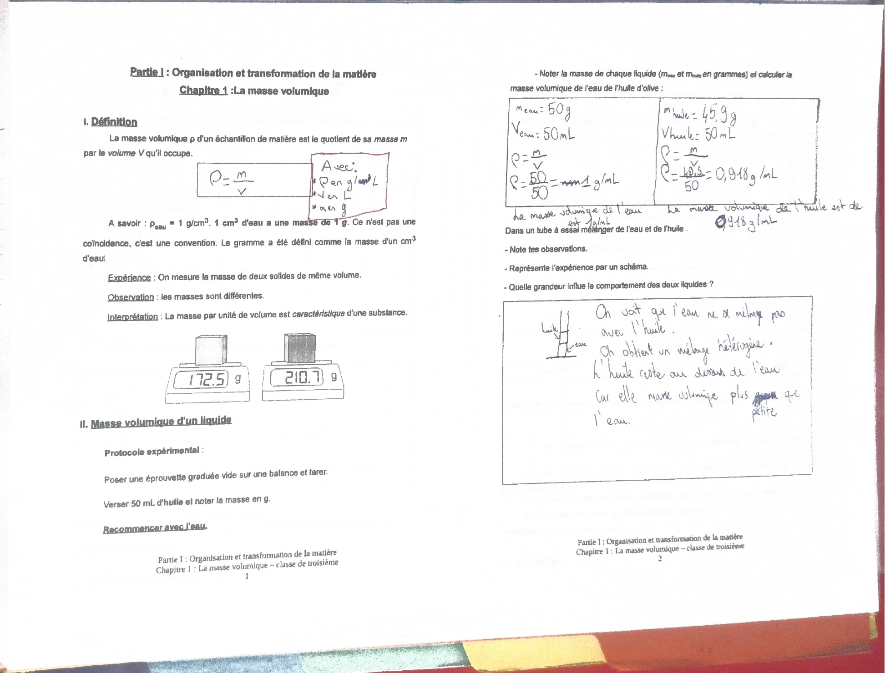
Pages 1 et 2 de la fiche, avec les calculs et le schéma du tube à essai.Chapitre 1 · solide
Le laiton
Protocole : verser 80 mL d’eau dans l’éprouvette, plonger une masse marquée en laiton de 23,5 g.
Sur le schéma du cahier, le volume passe de 12,5 mL à 16 mL. Volume de l’objet : V = 16 − 12,5 = 3,5 mL.
Retouche : le protocole parle de 80 mL d’eau mais le schéma montre 12,5 mL, à vérifier. Le résultat (6,71 g/mL) est loin de la vraie masse volumique du laiton, environ 8,5 g/mL : il y a sans doute une erreur de lecture du volume.
ρ = 23,5 / 3,5 ≈ 6,71 g/mL. La masse volumique de cet objet est d’environ 6,71 g/mL.
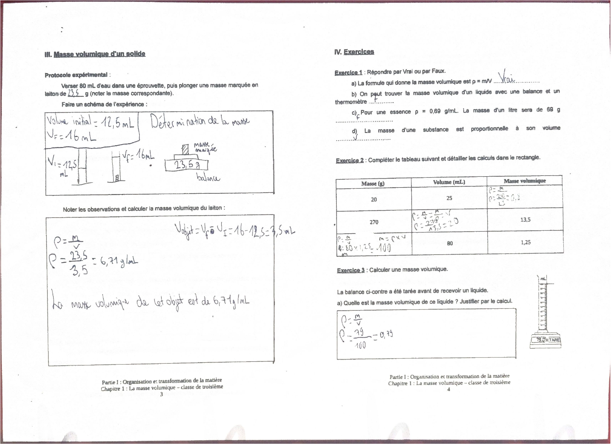
Déplacement d’eau pour le laiton, puis le tableau d’exercices déjà calculé.
Calculs déjà faits sur la fiche
20 g et 25 mL : ρ = 20 / 25 = 0,8 g/mL.
270 g et ρ = 13,5 g/mL : V = 270 / 13,5 = 20 mL.
80 mL et ρ = 1,25 g/mL : m = 1,25 × 80 = 100 g.
Éprouvette : 79 g pour 100 mL, ρ = 79 / 100 = 0,79 g/mL.
Pour une essence à 0,80 g/mL, un litre fait 0,80 × 1 000 = 800 g, pas 80 g.
Trois exercices de la feuille ne sont pas encore remplis : les canettes, le pont, l’anneau. Ils utilisent les mêmes relations, m = ρ × V et V = m / ρ.
Chapitre 2
L’atome
La matière est constituée d’atomes. Quand les atomes sont liés ensemble, ils forment une molécule.
L’atome est constitué d’un noyau autour duquel gravitent un ou plusieurs électrons, portant chacun une charge négative.
Le noyau est constitué de particules chargées positivement, les protons, et de particules sans charge électrique, les neutrons. Protons et neutrons sont les nucléons.
Structure lacunaire : entre les électrons et le noyau, il y a du vide.
L’atome est électriquement neutre : autant de protons (charge +) que d’électrons (charge −).
Tous les atomes sont répertoriés dans la classification périodique des éléments. Ils sont classés selon leur numéro atomique Z.
Z correspond au nombre de protons dans le noyau. Le nombre de nucléons, aussi appelé nombre de masse, est noté A. Le nombre de neutrons est noté N. A = Z + N, donc N = A − Z.
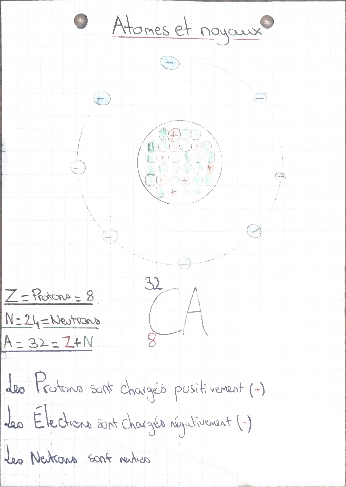
Schéma du cahier. Protons positifs, électrons négatifs, neutrons neutres. Exemple noté : Z = 8, N = 24, A = 32. Retouche : ces valeurs ne correspondent à aucun atome réel (l’oxygène a Z = 8, N = 8, A = 16 ; le soufre a Z = 16, N = 16, A = 32), sans doute mal recopiées.
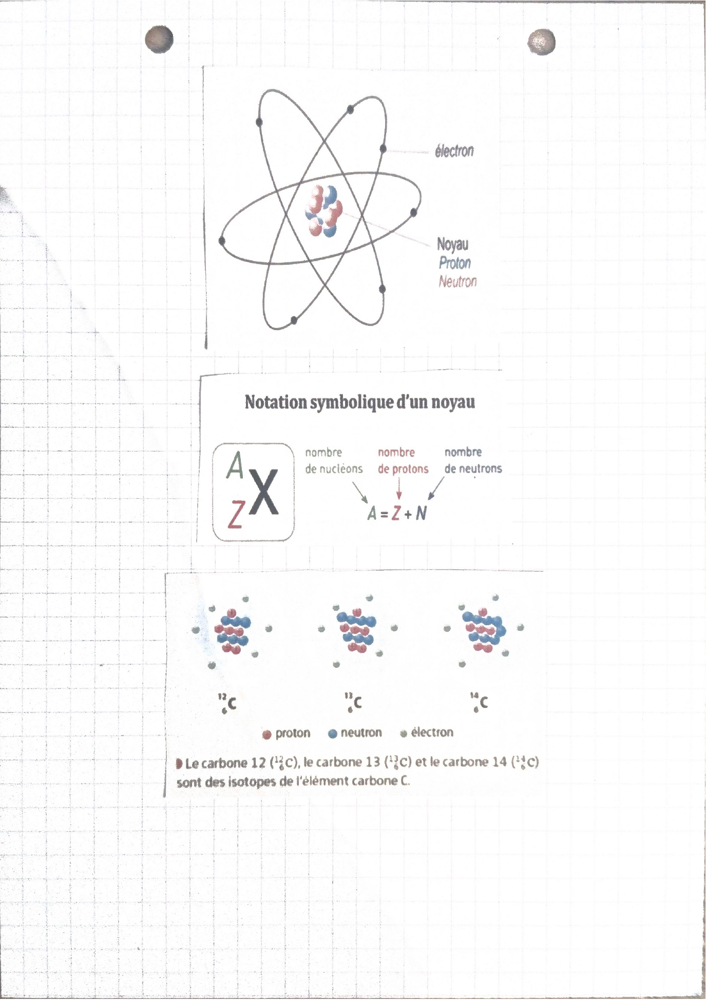
Notation AZX. Les carbones 12, 13 et 14 sont des isotopes de l’élément carbone.
Exemple recopié, l’atome de cuivre : 6329Cu. Z = 29, A = 63, N = 63 − 29 = 34 neutrons.
La feuille d’exercices du chapitre 2, atome de sodium et lingot d’or, est dans le scan. Elle n’est pas encore remplie.
Repérer les adverbes et les pronoms interrogatifs : qui, comment, pourquoi.
Reformuler en phrase affirmative : « Pour répondre, je dois… »
Manuel · chapitre 9 · activité 1
Des atomes aux ions : les hypothèses historiques
Ces pages viennent du manuel de physique-chimie (pages 109 à 117), pas du cahier. Le chapitre 9 du manuel prolonge le chapitre 2 du cahier, « L’atome ». Rien n’est écrit à la main sur ces photos.
Le chapitre a trois objectifs : décrire la composition d’un atome, décrire la composition d’un ion monoatomique, identifier certains ions présents dans une solution. Trois questions l’ouvrent : comment représenter un atome ? L’eau pure peut-elle conduire le courant électrique ? Sur une bandelette de piscine, comment lit-on le taux d’une espèce chimique ?
Document 1 : des hypothèses historiques
Les physiciens Joseph John Thomson (anglais, 1856-1940) et Jean Perrin (français, 1870-1942) découvrent l’existence des électrons, des particules de charge électrique négative.
La matière, donc les atomes, est électriquement neutre. Les atomes doivent donc contenir aussi un constituant chargé positivement.
Deux modèles s’opposent. Thomson imagine l’atome comme un pudding : une « pâte » positive contenant des « raisins » négatifs, les électrons. Perrin imagine un modèle planétaire : des électrons négatifs qui « gravitent » autour d’un noyau central positif.
Quelques années plus tard, le physicien néo-zélandais Ernest Rutherford (1871-1937), qui travaillait en Angleterre, met en évidence le vide entre le noyau et les électrons. L’hypothèse de Perrin est confirmée.
Retouche signalée : le manuel écrit « au XXe siècle » pour la découverte de l’électron. Elle date de 1897, donc de la fin du XIXe siècle.
Document 2 : représenter un atome
La sphère qui représente un atome est essentiellement constituée de vide. Au centre, un noyau très petit, chargé positivement. Autour, des électrons encore plus petits. Le manuel dessine l’hydrogène (1 charge + au noyau, 1 électron), le carbone (6 et 6) et l’oxygène (8 et 8).
Questions a à d de l’exploitation (dessiner les modèles de Thomson et de Perrin, dire lequel a été retenu, ce qui distingue des atomes différents, à quoi correspond le numéro Z) : pas encore remplies.
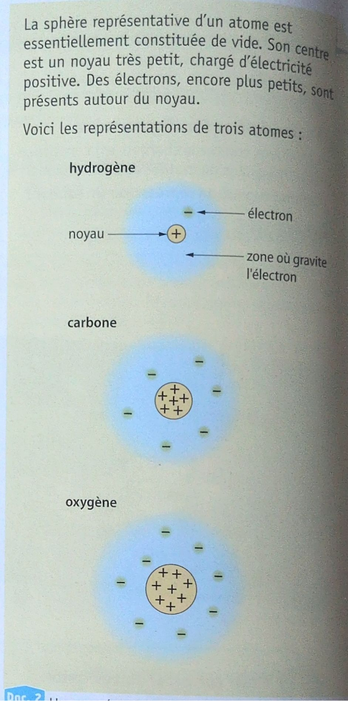
Document 2 du manuel : noyau positif au centre, électrons autour, beaucoup de vide.Manuel · chapitre 9 · cours
Constitution d’un atome
La matière est constituée de petits « grains » appelés atomes. Le diamètre d’un atome est de l’ordre de 10−10 m = 0,1 nm.
Un atome est constitué d’un noyau central autour duquel gravitent un ou plusieurs électrons. Le noyau et les électrons sont séparés par du vide.
Il existe une centaine d’atomes différents. Leurs noms, symboles et caractéristiques sont dans le tableau périodique des éléments, à la fin du manuel.
Le noyau est chargé positivement. Le numéro atomique Z indique le nombre de charges positives du noyau. Exemple du manuel : le néon, Ne, Z = 10.
Un atome est électriquement neutre. La charge positive du noyau est compensée par les charges négatives, portées chacune par un électron.
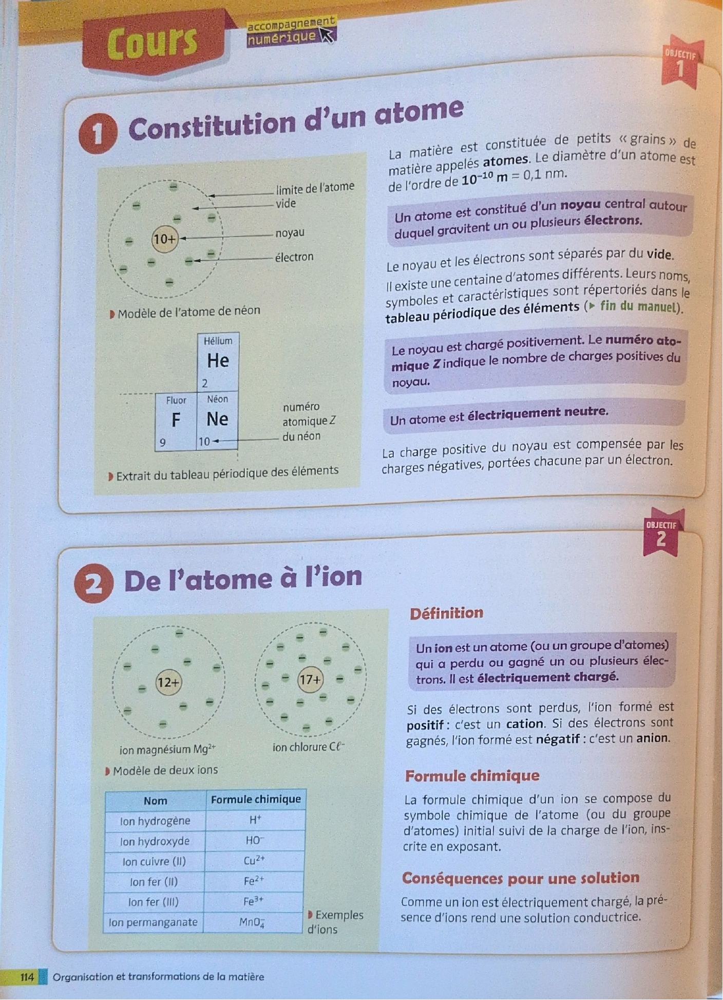
Page 114 du manuel : modèle de l’atome de néon, ions magnésium et chlorure, tableau d’ions.Manuel · chapitre 9 · cours
De l’atome à l’ion
Un ion est un atome (ou un groupe d’atomes) qui a perdu ou gagné un ou plusieurs électrons. Il est électriquement chargé.
Si des électrons sont perdus, l’ion est positif : c’est un cation.
Si des électrons sont gagnés, l’ion est négatif : c’est un anion.
Formule chimique : le symbole de l’atome (ou du groupe d’atomes), suivi de la charge de l’ion en exposant.
Comme un ion est chargé, la présence d’ions rend une solution conductrice.
Exemples du manuel : ion magnésium Mg2+ (noyau 12+), ion chlorure Cl− (noyau 17+).
H+ion hydrogène
HO−ion hydroxyde
Cu2+ion cuivre (II)
Fe2+ion fer (II)
Fe3+ion fer (III)
MnO4−ion permanganate
Manuel · chapitre 9 · cours
Identifier des ions dans une solution
Une solution est électriquement neutre : si elle contient des cations, elle contient aussi des anions.
Le nom d’une solution renseigne sur sa composition. Une solution de chlorure de sodium contient des ions chlorure Cl− et des ions sodium Na+. Le solvant sous-entendu est l’eau : l’eau salée en est un exemple.
On peut identifier certains ions grâce à des tests caractéristiques. Au contact d’un réactif adapté, chaque ion forme un précipité caractéristique (fiche pratique n° 5 du manuel).
Ces tests se font sur un échantillon de la solution, jamais sur toute la solution.
Photo du manuel : avec la soude, des précipités montrent la présence des ions Cu2+, Fe2+, Fe3+ et Zn2+.
Je retiens l’essentiel
Un atome est constitué d’un noyau central autour duquel gravitent un ou plusieurs électrons. Un atome est électriquement neutre.
Un ion est un atome ou un groupe d’atomes qui a perdu ou gagné un ou plusieurs électrons. Un ion est électriquement chargé.
On identifie un ion présent dans une solution en faisant subir un test caractéristique à un échantillon de la solution.
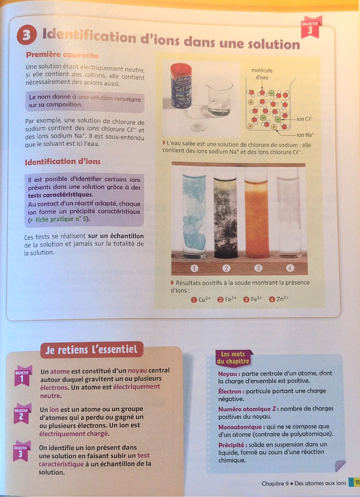
Page 115 du manuel : eau salée, précipités obtenus avec la soude, l’essentiel et les mots du chapitre.
Les mots du chapitre 9
Noyau
Partie centrale d’un atome, dont la charge d’ensemble est positive.
Électron
Particule portant une charge négative.
Numéro atomique Z
Nombre de charges positives du noyau.
Monoatomique
Qui ne se compose que d’un atome (contraire de polyatomique).
Précipité
Solide en suspension dans un liquide, formé au cours d’une réaction chimique.
Cation, anion
Ion positif (électrons perdus), ion négatif (électrons gagnés).
Manuel · chapitre 9 · exercices
Exercices des pages 116 et 117
Aucun n’est encore fait. Les solutions des QCM sont page 480 du manuel.
Objectif 1, décrire la composition d’un atome : 1 QCM, 2 modèle de l’atome de carbone, 3 qui suis-je ? (47 charges positives), 4 le soufre, 5 schématiser un atome de 7 charges positives, 6 une question de taille (hydrogène), 7 où se concentre la matière ?
Objectif 2, décrire la composition d’un ion monoatomique : 8 QCM, 9 solution ionique et charge électrique, 10 atome, molécule ou ion ?, 11 l’intrus, 12 qui suis-je ? (29 charges, 27 électrons), 13 l’ion fluorure du dentifrice, 14 l’ion lithium des batteries, 15 les deux ions du fer.
La troisième photo du PDF est un double partiel de la page 116.
Manuel · chapitre 13 · cours
Description du noyau atomique
Ces pages viennent du manuel (pages 162 à 168), pas du cahier. Le chapitre 13 reprend et précise ce que le chapitre 2 du cahier dit du noyau, de Z, de A et des isotopes. Rien n’est écrit à la main dessus.
Dimension
Un atome est constitué d’un noyau, dont la dimension a pour ordre de grandeur 10−15 m, autour duquel gravitent des électrons. Le noyau atomique est 100 000 fois plus petit que l’atome.
Cohérence avec le chapitre 9 : l’atome mesure environ 10−10 m, le noyau 10−15 m. Le rapport 10−10 / 10−15 = 105 = 100 000, c’est bien ce que dit le manuel.
Constitution
Les particules qui constituent le noyau atomique sont appelées des nucléons. Parmi ceux-ci, on distingue les protons, chargés positivement, et les neutrons, électriquement neutres.
Exemple du manuel : le noyau de l’atome de lithium possède 7 nucléons, dont 3 protons et 4 neutrons.
Masse
La masse des électrons est négligeable devant celle des nucléons. Plus de 99 % de la masse d’un atome est concentrée dans son noyau.
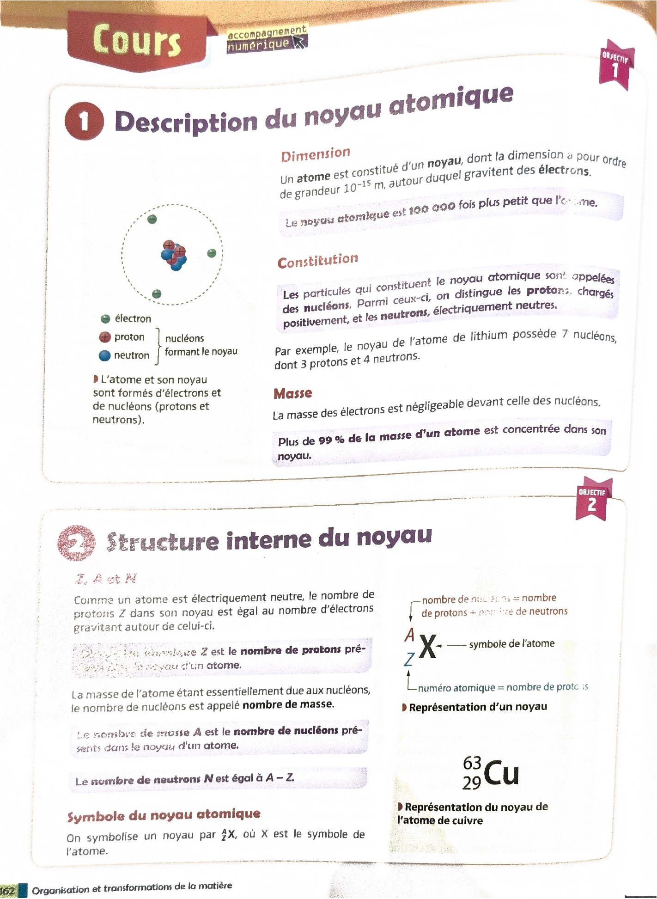
Page 162 du manuel : schéma de l’atome et de son noyau (électrons, protons et neutrons = nucléons), puis Z, A, N et le symbole du noyau de cuivre.Manuel · chapitre 13 · cours
Structure interne : Z, A, N et le symbole AZX
Comme un atome est électriquement neutre, le nombre de protons Z dans son noyau est égal au nombre d’électrons qui gravitent autour. Le numéro atomique Z est le nombre de protons présents dans le noyau d’un atome.
La masse de l’atome étant essentiellement due aux nucléons, le nombre de nucléons est appelé nombre de masse. Le nombre de masse A est le nombre de nucléons présents dans le noyau d’un atome.
Le nombre de neutrons N est égal à A − Z.
On symbolise un noyau par AZX : A en haut à gauche (nombre de nucléons), Z en bas à gauche (numéro atomique), X le symbole de l’atome.
Retouche : les deux nombres s’écrivent à gauche du symbole, A au-dessus de Z. Écrire Cu63 ou mettre les nombres à droite, c’est se tromper avec l’écriture d’un ion, où la charge est en haut à droite (Cu2+).
Méthode : lire un symbole et trouver N
Lire A, le nombre du haut : c’est le nombre de nucléons.
Lire Z, le nombre du bas : c’est le nombre de protons, et aussi le nombre d’électrons de l’atome.
Calculer N = A − Z, le nombre de neutrons. Vérifier que protons + neutrons redonne A.
Un élément chimique est l’ensemble des atomes, ions… qui ont le même nombre de protons dans leur noyau, c’est-à-dire le même numéro atomique Z.
Le métal Cu, l’ion Cu2+ et le cuivre de l’oxyde de cuivre CuO sont des espèces chimiques contenant l’élément cuivre.
Un élément chimique ne peut pas se transformer en un autre élément par une transformation chimique. Ce qui annonce le chapitre 3 du cahier : dans une réaction chimique, les atomes se réarrangent mais ne disparaissent pas.
Il existe plus d’une centaine d’éléments chimiques, répertoriés dans le tableau périodique des éléments, à la fin du manuel.
Deux atomes sont isotopes s’ils ont le même numéro atomique Z mais des nombres de masse A différents. Les isotopes d’un même élément ont souvent les mêmes propriétés chimiques, mais des masses différentes, ce qui permet de les différencier.
Exemple du manuel : le carbone 12 (126C), le carbone 13 (136C) et le carbone 14 (146C) sont des isotopes de l’élément carbone. Tous ont 6 protons ; ils ont respectivement 6, 7 et 8 neutrons.
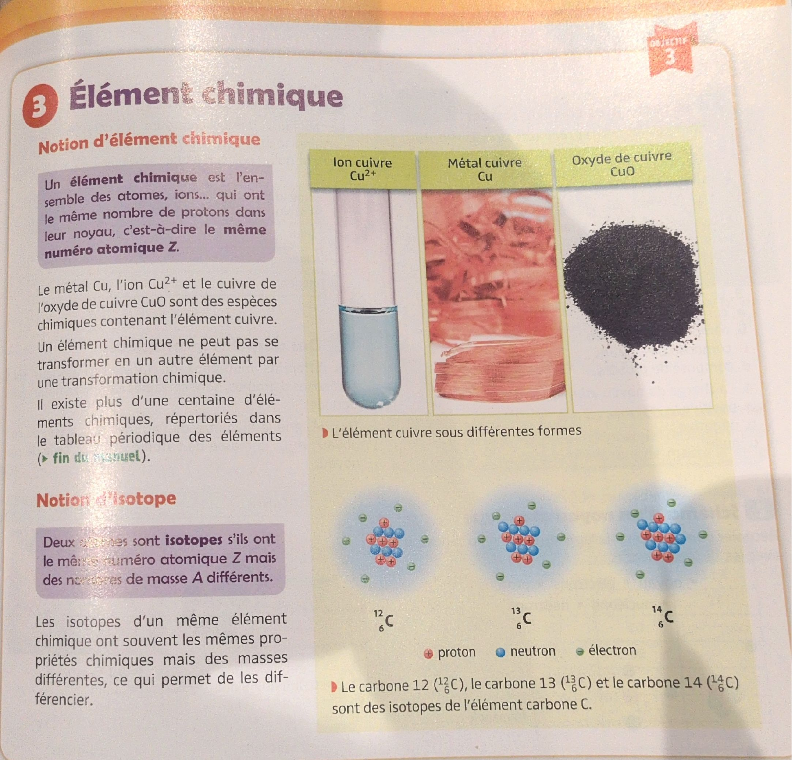
Page 163 du manuel : l’élément cuivre sous trois formes (ion Cu2+, métal Cu, oxyde CuO) et les modèles des carbones 12, 13 et 14.
Je retiens l’essentiel
Le noyau atomique est 100 000 fois plus petit que l’atome. Les nucléons (protons et neutrons) constituent le noyau atomique, qui concentre la quasi-totalité de la masse d’un atome.
Le nombre de neutrons N est égal à la différence entre le nombre de masse A (nombre de nucléons) et le numéro atomique Z (nombre de protons) : N = A − Z. On représente un noyau par le symbole AZX.
Un élément chimique est l’ensemble des atomes, ions… ayant le même nombre de protons Z.
Manuel · chapitre 13 · cours
Les mots du chapitre 13
Particule
Constituant élémentaire de la matière.
Nucléons
Ensemble des protons et des neutrons contenus dans le noyau atomique.
Isotopes
Atomes qui ont le même numéro atomique Z mais des nombres de masse A différents.
Nucléaire
Qui est relatif au noyau atomique.
Numéro atomique Z
Nombre de protons présents dans le noyau d’un atome. Égal au nombre d’électrons de l’atome.
Nombre de masse A
Nombre de nucléons présents dans le noyau d’un atome.
Élément chimique
Ensemble des atomes, ions… qui ont le même nombre de protons Z.
Manuel · chapitre 13 · exercices
Exercices des pages 164 à 168
Aucun n’est encore fait. Les solutions des QCM sont page 480 du manuel. Les données utiles sont rappelées ici, pas les réponses.
Objectif 1, décrire le noyau atomique (page 164)
1 QCM : le noyau est 1 000, 10 000 ou 100 000 fois plus petit que l’atome ; masse du noyau par rapport à celle de l’atome ; de quoi le noyau est composé ; charge du noyau.
2 Schéma d’un noyau atomique à légender avec : noyau, électrons, protons, nucléons, neutrons.
3 Question de cours : texte à trous avec les mots l’atome, protons, neutrons, 100 000, nucléons, positive, nulle, 99 %, 10−10.
4 Masse de particules : bore (5 protons, 6 neutrons), fluor (9 p, 10 n), xénon (54 p, 77 n). Un nucléon a une masse de 1,67 × 10−27 kg.
Objectif 2, déterminer la structure interne d’un noyau (page 165)
6 QCM : comment se note le numéro atomique et ce qu’il représente ; le nombre de masse ; la relation entre N, Z et A.
7 Symbole du noyau : expliquer AZX, puis écrire le symbole du carbone (A = 12, Z = 6, C), du silicium (28, 14, Si), de l’or (197, 79, Au) et du francium (223, 87, Fr).
8 Une copie imparfaite : trouver et corriger les erreurs d’une copie sur le sodium 2311Na, qui écrit « A = N − Z » et « N = 23 + 11 = 34 ».
9 Protons et neutrons : l’atome de bore possède 5 électrons et 11 nucléons. Nom et valeur de Z, relation entre N, A et Z, calcul de N.
10 Tableau à compléter : platine (Z = 78, N = 117), soufre (A = 32, N = 16), calcium (A = 40, Z = 20), plomb (A = 207, Z = 82), iode (A = 127, N = 74), phosphore (Z = 15, N = 16), néon (A = 20, N = 10).
11 Noyau de l’atome de nickel, 5828Ni : Z, A et N, en détaillant.
Objectif 3, comprendre la notion d’élément chimique (page 166)
12 QCM : ce qu’ont en commun les espèces d’un même élément ; définition des isotopes ; isotopes possibles de l’azote 147N parmi trois propositions.
13 Élément chimique : le carbone 12, 126C, présent dans le vivant, le charbon, le diamant.
14 Qui suis-je ? avec le tableau périodique : « je suis gris et mon numéro atomique vaut 47 » ; « le noyau de mon atome possède 16 protons » ; « je suis l’élément le plus léger, mes isotopes sont le deutérium et le tritium ».
15 La rouille : lors de la corrosion, une transformation chimique, l’élément fer disparaît-il ?
16 Éléments chimiques et isotopes : définir « isotope », puis trouver les isotopes d’un même élément dans le tableau A (13 p, 14 n), B (12 p, 14 n), C (13 p, 13 n), D (12 p, 13 n), E (14 p, 13 n).
17 Oxygène 16 (8 protons, 8 neutrons) et oxygène 18 (8 protons, 10 neutrons) : nom de l’élément, pourquoi ce sont des isotopes, origine des noms, symboles.
18 Uranium 235 (92 p, 143 n), 238 (92 p, 146 n) et 234 (92 p, 142 n) : mêmes questions que l’exercice 17. L’uranium 235 est utilisé dans les centrales nucléaires.
Construire et développer ses compétences (pages 167 et 168)
19 Au cœur du noyau atomique : le strontium 87, 38 protons. Nom des particules du noyau, sens du nombre 87, puis Z, A et N.
20 Le lithium : élément des batteries Li-ion, trois isotopes schématisés à comparer (protons, neutrons, symboles, lequel a la plus grande masse).
21 Modèles de l’hydrogène : l’hydrogène 11H, le deutérium 21H et le tritium 31H. Schémas et comparaison des masses.
22 À la découverte des neutrons : texte sur James Chadwick (1891-1974), qui découvre le neutron en 1932 en reprenant les expériences de Bothe, Becker, Irène et Frédéric Joliot-Curie : bombardement d’atomes légers (lithium, bore, béryllium) par des particules alpha ; particules de charge nulle, de masse identique à celle du proton, 1,67 × 10−24 g. Récompense reçue en 1935 à chercher. Question 5 : le béryllium, dont le noyau comporte 5 neutrons.
23 Nuclear power plant : texte en anglais sur les isotopes radioactifs instables et la fission nucléaire ; l’uranium 235 a 92 protons et 143 neutrons.
24 Eau lourde : comparer la molécule d’eau lourde (deutérium) et la molécule d’eau normale ; symboles des noyaux ; expliquer le mot « lourde ».
25 Tâche complexe, les isotopes du carbone : carte d’identité de l’isotope le plus lourd (nom, masse en kg, diamètre en m, Z, A, N, schéma). Données : Z = 6 ; le carbone 12 est le plus présent, le carbone 13 représente 1,1 % du carbone terrestre, le carbone 14 est rare et radioactif, utilisé pour dater ; rayon du noyau 6,7 × 10−16 m ; masse d’un nucléon 1,67 × 10−27 kg. Coup de pouce : ne pas confondre les dimensions du noyau avec celles de l’atome.
Quiz final : le phosphore, Z = 15, a une masse d’environ 51,8 × 10−27 kg ; un nucléon pèse 1,67 × 10−27 kg. Trouver le nombre de neutrons.
Chapitre 3 · I
I. Les molécules
La matière est un assemblage d’atomes, mais la façon dont ils s’assemblent est très différente suivant le corps considéré.
Une molécule est formée d’au moins deux atomes reliés ensemble par des liaisons chimiques.
On représente une molécule par une formule et par un modèle moléculaire. Dans la formule, le symbole de chaque atome est suivi d’un indice qui donne son nombre : O2 contient 2 atomes d’oxygène, CO2 contient 1 atome de carbone et 2 atomes d’oxygène, C5H12 contient 5 atomes de carbone et 12 atomes d’hydrogène. Quand il n’y a qu’un seul atome, on n’écrit pas l’indice 1.
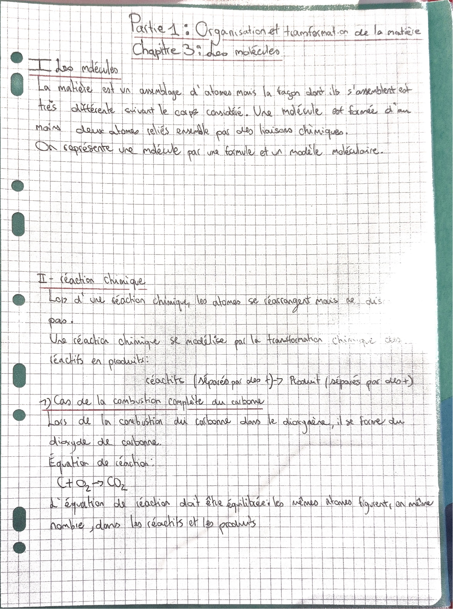
Page 1 du chapitre 3 : définition de la molécule, modélisation d’une réaction chimique, équation de la combustion complète du carbone.Chapitre 3 · II
II. La réaction chimique : équilibrer une équation
Lors d’une réaction chimique, les atomes se réarrangent mais ne disparaissent pas.
Une réaction chimique se modélise par la transformation chimique des réactifs en produits. On l’écrit sous la forme : réactifs (séparés par des +) → produits (séparés par des +). Les réactifs sont à gauche de la flèche, les produits à droite.
1) Combustion complète du carbone
Lors de la combustion du carbone dans le dioxygène, il se forme du dioxyde de carbone. Équation de réaction :
C + O2 → CO2
L’équation de réaction doit être équilibrée : les mêmes atomes figurent, en même nombre, dans les réactifs et dans les produits. Ici, 1 atome de carbone et 2 atomes d’oxygène de chaque côté : c’est déjà équilibré.
2) Combustion du pentane
Non équilibrée : C5H12 + O2 → CO2 + H2O
Équilibrée : C5H12 + 8 O2 → 5 CO2 + 6 H2O
Vérification : carbone, 5 = 5 ; hydrogène, 12 = 6 × 2 = 12 ; oxygène, 8 × 2 = 16 à gauche, 5 × 2 + 6 = 16 à droite. L’équation est bien équilibrée.
Méthode pour équilibrer
Compter chaque sorte d’atome à gauche, puis à droite de la flèche.
Ajuster les coefficients, les nombres écrits devant les formules, jusqu’à ce que les comptes soient égaux. Commencer par le carbone et l’hydrogène, finir par l’oxygène.
Ne jamais changer les indices à l’intérieur d’une formule : écrire CO3 à la place de CO2, ce serait changer de molécule.
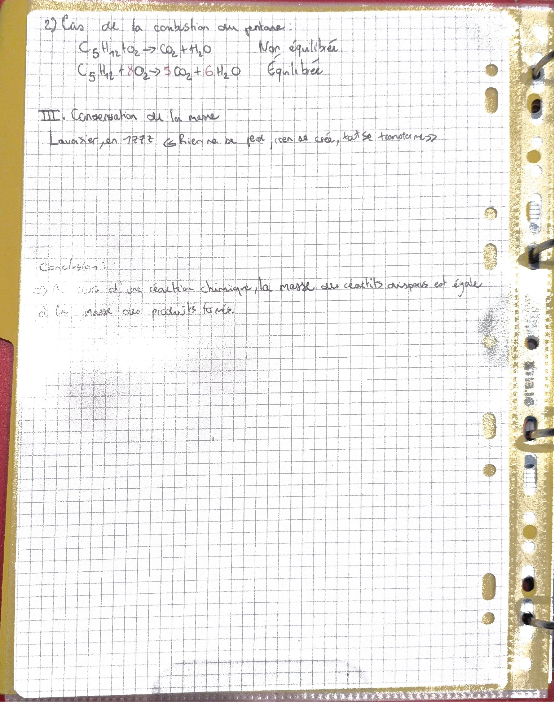
Page 2 du chapitre 3 : les deux équations du pentane, avec les coefficients 8, 5 et 6 en rouge, puis la phrase de Lavoisier et la conclusion.Chapitre 3 · III
III. La conservation de la masse (Lavoisier)
Lavoisier, en 1777 : « Rien ne se perd, rien ne se crée, tout se transforme. »
Retouche : cette phrase résume le Traité élémentaire de chimie de Lavoisier, publié en 1789. Le cahier note 1777 : garde la date du cahier pour le contrôle.
Conclusion : au cours d’une réaction chimique, la masse des réactifs disparus est égale à la masse des produits formés.
C’est logique avec le II : les atomes se réarrangent sans disparaître, donc la masse totale ne change pas. Exemple : si 12 g de carbone brûlent complètement avec 32 g de dioxygène, il se forme 12 + 32 = 44 g de dioxyde de carbone.
Les mots du chapitre 3
Molécule
Assemblage d’au moins deux atomes reliés ensemble par des liaisons chimiques.
Liaison chimique
Ce qui relie les atomes entre eux à l’intérieur d’une molécule.
Modèle moléculaire
Représentation d’une molécule avec des boules pour les atomes, à côté de sa formule.
Réactif
Espèce chimique qui disparaît au cours de la réaction. À gauche de la flèche.
Produit
Espèce chimique qui se forme au cours de la réaction. À droite de la flèche.
Équation de réaction
Écriture réactifs → produits, avec des formules. Elle doit être équilibrée.
Combustion
Réaction d’un combustible (carbone, pentane…) avec le dioxygène.
Conservation de la masse
Masse des réactifs disparus = masse des produits formés.
Cette partie n’est ni dans ton cahier, ni dans les pages du manuel. Ce sont des connaissances ajoutées, sur les mêmes notions, pour aller plus loin. Ce qui compte pour le contrôle reste le cours du professeur. Les réponses des exercices du manuel ne sont pas données ici.
Extra · chapitre 1
Les unités, sans se tromper
1 mL = 1 cm³. 1 L = 1 dm³ = 1 000 mL. 1 m³ = 1 000 L.
Une même masse volumique s’écrit de plusieurs façons : 1 g/mL = 1 g/cm³ = 1 kg/L = 1 000 kg/m³. L’eau vaut donc aussi 1 kg/L : un litre d’eau pèse 1 kg.
Avant de calculer, on met la masse et le volume dans des unités qui vont ensemble : g avec mL, kg avec L.
Extra · chapitre 1
Flotter ou couler
Un objet plein flotte sur un liquide si sa masse volumique est plus petite que celle du liquide. Il coule si elle est plus grande. C’est la même règle que pour l’huile au-dessus de l’eau.
0,92 g/cm³glace : elle flotte sur l’eau
2,7 g/cm³aluminium
7,9 g/cm³fer
13,5 g/cm³mercure, un métal liquide
19,3 g/cm³or
1,2 g/Lair, environ 800 fois moins que l’eau
L’eau de mer, salée, a une masse volumique d’environ 1,03 g/mL : on y flotte un peu mieux que dans l’eau douce.
Les masses volumiques servent à identifier une substance : on mesure ρ, puis on compare avec un tableau de valeurs. Comparer ρ à celle de l’eau (1 g/mL) donne aussi la densité d = ρ / ρeau, un nombre sans unité qui vaut 1 pour l’eau et 0,918 pour l’huile.
Extra · chapitre 2
L’atome, à quelle échelle ?
Les ordres de grandeur sont dans le manuel (10−10 m pour l’atome, 10−15 m pour le noyau, 100 000 fois plus petit). Image pour s’en souvenir : si le noyau avait la taille d’une bille au centre d’un stade, les électrons tourneraient aux tribunes. Tout le reste est vide : c’est la structure lacunaire.
Pourquoi la masse est dans le noyau : un proton ou un neutron est environ 1 836 fois plus lourd qu’un électron. Même avec 29 électrons, le cuivre n’a presque rien hors de son noyau.
Conséquence utile pour les exercices : la masse d’un atome vaut à peu près le nombre de nucléons A multiplié par la masse d’un nucléon, 1,67 × 10−27 kg. À l’inverse, en divisant la masse d’un atome par celle d’un nucléon, on retrouve A.
Pour écrire une puissance de 10 : 10−10 m = 0,000 000 000 1 m, avec 10 rangs après la virgule. 1 nm (nanomètre) = 10−9 m, donc 0,000 002 nm = 2 × 10−15 m, l’ordre de grandeur d’un noyau.
Extra · chapitre 2
Comment on a découvert l’atome
Le philosophe grec Démocrite imagine des grains insécables, les « atomos ».
Joseph John Thomson découvre l’électron. En 1904, il propose son modèle du « pudding ».
Jean Perrin propose un modèle planétaire. Il recevra le prix Nobel de physique en 1926, pour d’autres travaux sur les atomes.
Ernest Rutherford, avec ses élèves Geiger et Marsden, bombarde une très fine feuille d’or avec des particules. Presque tout passe à travers ; quelques-unes rebondissent. L’atome est surtout du vide, avec un petit noyau positif : le pudding de Thomson est abandonné.
Niels Bohr précise le modèle : les électrons tournent sur des orbites bien définies.
James Chadwick découvre le neutron, en bombardant du béryllium avec des particules alpha. L’exercice 22 du manuel raconte cette découverte.
Extra · chapitre 2
Isotopes, plus loin
Un exemple hors manuel : l’aluminium 2713Al a 13 protons et 27 − 13 = 14 neutrons. C’est son seul isotope présent dans la nature.
Le carbone 14 est radioactif : ses noyaux se transforment lentement en azote 14. Tous les 5 730 ans, la moitié des noyaux a disparu : c’est sa demi-vie. En mesurant ce qu’il reste de carbone 14 dans des os ou du bois, on calcule leur âge, jusqu’à environ 50 000 ans.
Les isotopes radioactifs sont dits instables. La fission de l’uranium 235, évoquée dans l’exercice 23, consiste à casser un gros noyau en noyaux plus petits, ce qui libère de l’énergie : c’est ce qui chauffe l’eau d’une centrale nucléaire.
L’eau lourde de l’exercice 24 contient du deutérium, l’hydrogène 2 : un proton et un neutron au lieu d’un proton seul. À toi de voir ce que ça change pour la masse de la molécule.
Extra · chapitre 9
Les ions, plus loin
Quand un atome devient un ion, seul le nombre d’électrons change. Le noyau, donc Z, reste le même : l’élément chimique ne change pas.
Astuce pour la charge : charge de l’ion = nombre de charges + du noyau − nombre d’électrons. Un ion 2+ a deux électrons de moins que l’atome.
L’eau pure conduit très mal le courant : elle ne contient presque pas d’ions. L’eau du robinet, l’eau de mer ou le corps humain conduisent beaucoup mieux, grâce aux ions dissous. D’où le danger d’un appareil électrique près du bain.
Sur l’étiquette d’une eau minérale, on lit les ions dissous en mg/L : calcium Ca2+, magnésium Mg2+, sodium Na+, hydrogénocarbonate HCO3−, sulfate…
Les couleurs des précipités avec la soude : bleu pour Cu2+, vert pour Fe2+, orange-rouille pour Fe3+, blanc pour Zn2+. Les ions chlorure Cl− se testent avec du nitrate d’argent : précipité blanc qui noircit à la lumière.
La soude est corrosive : lunettes et gants pour faire ces tests.
Extra · chapitre 3
Des formules à connaître
H2Oeau
CO2dioxyde de carbone
O2dioxygène
N2diazote, 78 % de l’air
CH4méthane, gaz naturel
C4H10butane, gaz des briquets
Le sel de cuisine, NaCl, n’est pas une molécule : c’est un cristal ionique, un empilement d’ions Na+ et Cl−. Sa formule donne seulement la proportion des ions.
Code couleur des modèles moléculaires : carbone (C) en noir, hydrogène (H) en blanc, oxygène (O) en rouge, azote (N) en bleu, chlore (Cl) en vert. La molécule d’eau, c’est une boule rouge et deux petites boules blanches.
Le pentane C5H12, le butane C4H10 et le méthane CH4 sont des hydrocarbures : des molécules faites uniquement de carbone et d’hydrogène. Leur combustion complète donne toujours du dioxyde de carbone et de l’eau.
Extra · chapitre 3
Combustions et Lavoisier, plus loin
Ne pas confondre transformation chimique et transformation physique : lors d’un changement d’état (glace qui fond, eau qui bout), les molécules H2O restent les mêmes, aucune nouvelle espèce chimique ne se forme ; lors d’une réaction chimique, les liaisons se cassent et les atomes se réarrangent pour former de nouvelles molécules.
Combustion complète : assez de dioxygène, il se forme du dioxyde de carbone CO2. Combustion incomplète : manque de dioxygène, il se forme du monoxyde de carbone CO, un gaz invisible, inodore et très toxique. D’où le danger d’un chauffage mal réglé dans une pièce fermée.
Test du dioxyde de carbone : il trouble l’eau de chaux, qui devient blanchâtre. C’est ainsi qu’on vérifie qu’une combustion a produit du CO2.
Pour écrire une combustion complète d’hydrocarbure : équilibrer d’abord le carbone, puis l’hydrogène, et le dioxygène en dernier. Exemple : CH4 + 2 O2 → CO2 + 2 H2O.
Lavoisier a montré la conservation de la masse en pesant soigneusement réactifs et produits dans des récipients fermés. Avant lui, on croyait que la combustion faisait « perdre » de la matière, parce que la cendre pèse moins que le bois : on oubliait les gaz partis dans l’air.
Antoine Lavoisier, considéré comme le fondateur de la chimie moderne, a aussi été fermier général, c’est-à-dire collecteur d’impôts pour le roi. Il a été guillotiné pendant la Révolution, en 1794.
Tu as fini de lire ?
Le quiz sert à vérifier ce que tu as retenu, pas à apprendre. Lis d’abord le cours en entier (Complet), relis la Synthèse, et seulement ensuite teste-toi.